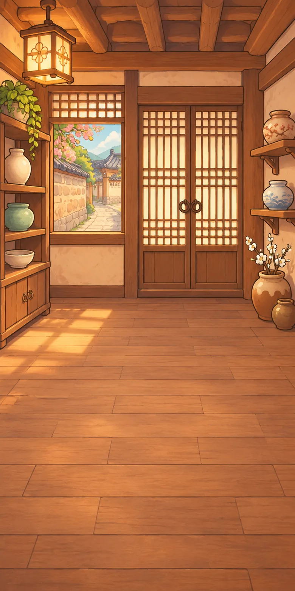
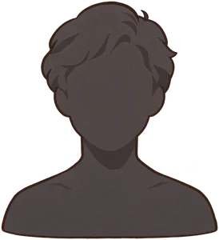
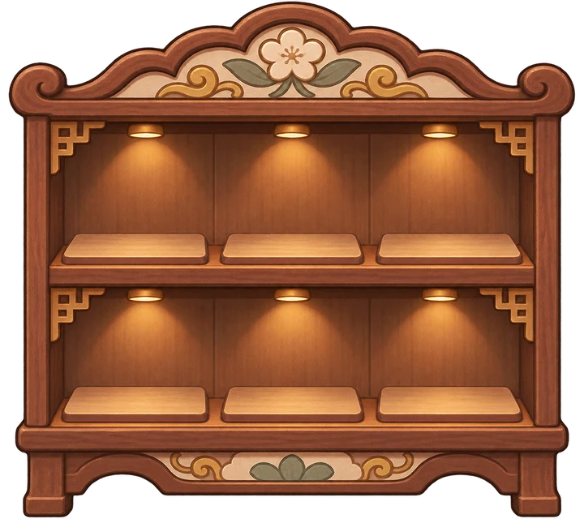
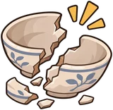

줄 선 순서
{{qq.name}}
납품할 수 있는 의뢰 · 「부르기」로 손님을 불러 건네요
조건을 채운 의뢰가 없어요
작품이 준비되면 여기서 손님을 부를 수 있어요
작품이 준비되면 여기서 손님을 부를 수 있어요

{{ct.guest.name}}
{{ct.toast}}
{{w.fitLbl}}
{{w.fitPct}}%
와르르… 실패
성형 완료!{{w.fx.stars}}
흔들림
{{w.wLabel}}
{{w.sheetTitle}}{{w.sheetSub}}
{{w.boardTxt}}
빚은 기물에 유약을 입히면 아래층 선반으로 옮겨져
자리가 생겨요. 그다음 새로 빚을 수 있어요.
자리가 생겨요. 그다음 새로 빚을 수 있어요.
{{w.toast}}
물레가 비었어요
아래 흙판의 흙을 골라 올려요
아래 흙판의 흙을 골라 올려요
2층 선반으로 옮겨요 ↗
실 손잡이를 잡고 점선을 따라 → 끝까지

{{shLbl}}{{shPct}}%
{{sb.viewTxt}}
{{sb.hint}}
{{mini.txt}}
{{sw.txt}}

대기{{gz.trayN}}
{{gz.trayEmptyText}}
{{gz.potHint}}
{{gz.ringLab}}
{{gz.subGuideText}}
기울기
{{gz.angLab}}{{gz.angNm}}
완성 미리보기
{{gz.pvPct}}
📋 의뢰 조건
{{cd.t}}
{{gz.liftText}}{{gz.liftSub}}
{{gz.condText}}
유약 고르기유약마다 색과 재료가 달라요
{{gz.toast}}
↓ 끌어내리면 한 번 더 시유
↑ 들어 올려 1층 선반에 놓으면 끝
↑ 들어 올려 1층 선반에 놓으면 끝
시유 완료 · 한 번 더 담그거나
끌어서 2층 선반에 ↗
끌어서 2층 선반에 ↗
붓 시유대
선반의 기물을 끌어다 올려요
선반의 기물을 끌어다 올려요
{{pt.viewTxt}}{{cn.t}}
 {{bk.tag}}
{{bk.tag}}
{{gzBtn.txt}}
{{bk.tag}}{{bk.sub}}{{kn.tip}}
{{rv.ribTxt}}
{{rv.name}}
실력 점수총 {{rv.tot}}점 / {{rv.max}}
발색{{rv.cpct}}
평가액{{rv.mul}}{{rv.val}}
{{kZone}}
100805010
{{kTemp}}
🪵 {{woodTxt}}
{{kHead}}

{{ds.sel.name}} {{ds.sel.grade}}
{{ds.sel.line}}
{{ds.pkTitle}}
{{ds.pkSub}}
{{ds.sellZoneText}}

{{ds.smashZoneText}}
보관 중 {{ds.storeCount}}점
{{ds.storeHint}}
가마에서 꺼낸 작품이 여기로 와요
미술관 큐레이터
거절해도 잃는 것은 없어요. 손님은 다시 들러요.
사고 싶은 작품
{{ds.target.name}} {{ds.target.grade}}
“이 작품, 저희 상설전에 모시고 싶습니다.”
{{ds.target.offer}}
+45
미술관 소장
{{ds.cf.n}}점 판매할까요?
{{c.name}} {{c.grade}}
{{c.value}}G
받을 골드
+{{ds.cf.sum}}G
📜 의뢰에 납품할 수 있는 작품이에요
· {{qq}}
판매하면 의뢰에는 쓸 수 없어요 · 납품은 카운터 손님에게
{{ds.toast}}
{{dp.title}}
{{dp.cnt}}
{{dp.selName}}{{dp.selRw}}
{{dp.pkTitle}}
{{dp.pkSub}}
{{pr.name}} {{pr.sub}}
{{pc.t}}
{{si.kp}}
{{si.kp}}
{{toast}}